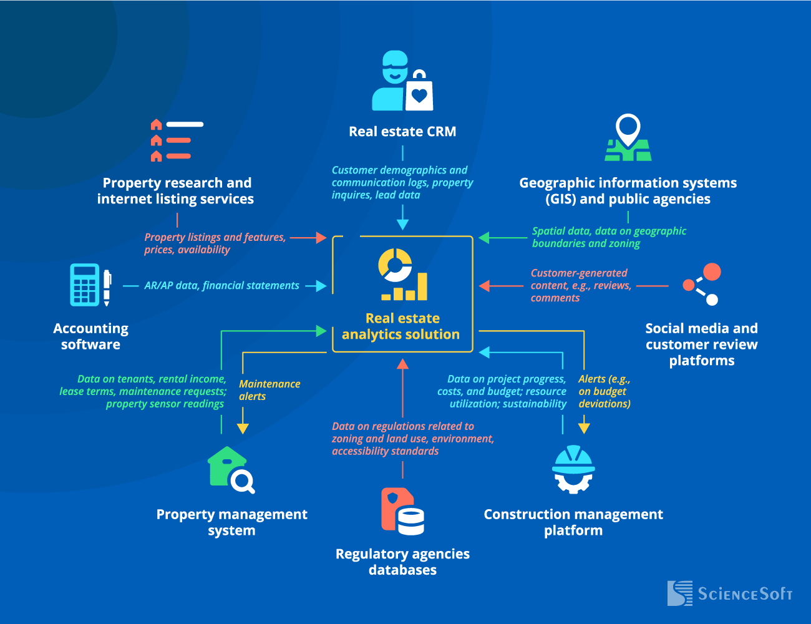
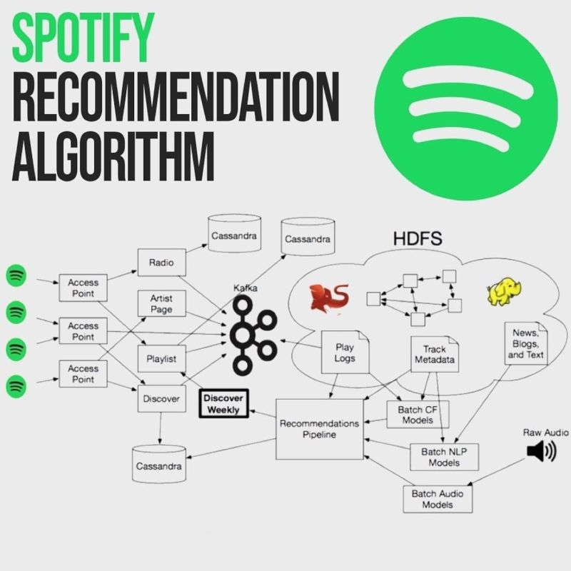

Projects
Real Estate Insights and Price Prediction Model
Real Estate Insights and Price Prediction Model
A data-driven analysis of the real estate market, focusing on trends, pricing patterns, and predictive modeling to forecast property values. The project uses advanced visualization and statistical methods to provide actionable insights for market analysis.
Python, Pandas, NumPy, Matplotlib, Seaborn, Data Analysis, Predictive Analytics, Data Visualization, Machine Learning.
Personalized Music Recommendation Engine
Personalized Music Recommendation Engine
A machine learning-based recommendation system designed to enhance Spotify user experience by analyzing listening habits and predicting song preferences. The project employs advanced data processing techniques and predictive modeling to deliver personalized music recommendations.
Python, Pandas, NumPy, Scikit-learn, Machine Learning, Data Preprocessing, Feature Engineering, Model Evaluation.
GitHubCustomer Churn

Customer Segmentation Analysis
This project analyzes customer data to predict churn using machine learning and sentiment analysis. Tasks include data cleaning, feature engineering, and applying models like logistic regression. Sentiment analysis of reviews with NLP provides insights to help reduce churn.
Python, Pandas, NumPy, Scikit-learn, NLP, Matplotlib, Seaborn
GitHubFifa Wordcup Analysis

Fifa Wordcup Data Analysis
This project focuses on analyzing historical FIFA World Cup data, including match statistics and knockout stages. Key steps include data scraping, cleaning, and exploratory data analysis (EDA) to uncover trends in team performance and match outcomes.
Data Cleaning and Wrangling, EDA, Statistical Summary, Feature Extraction, Data Visualization, Trend Analysis
GitHubRental Home
Full Stack Project Of Rental Home
This project focuses on developing a home rental platform where users can upload property listings, view available rentals, and manage bookings. The platform includes features such as property listing uploads, booking management, and user authentication.
REST API Development, User Authentication and Authorization, CRUD Operations, Data Validation and Error Handling, MVC Architecture
GitHub